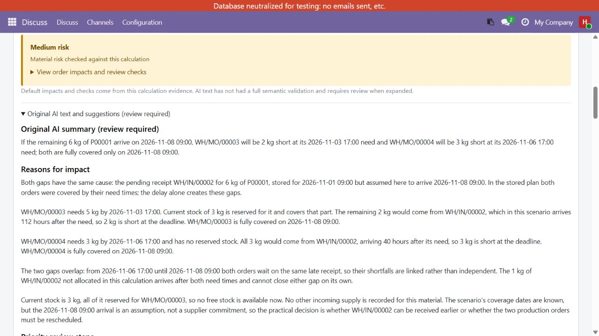
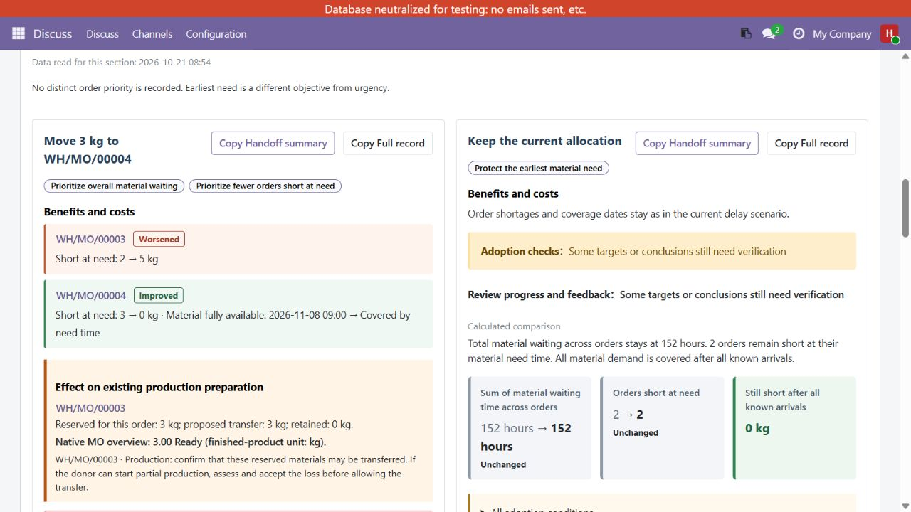
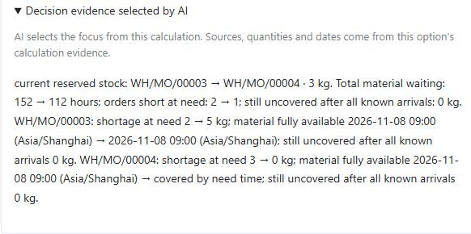

See which manufacturing orders will lack material, compare allocation choices, and review the trade-offs with purchasing and warehouse colleagues.
Free for Odoo 19 · Windows and Linux configurations tested · Optional AI uses your own provider account and is billed separately.
Compare the planned receipt with an assumed later arrival. Optional AI explains the affected orders, the cause of each shortage and the checks to make next.
Real AI example: a 6 kg receipt arrives late. One order lacks 2 kg at its need time and another lacks 3 kg. The AI explains why the remaining incoming quantity cannot solve a timing problem.

Actual English Odoo 19 screen, captured on 21 October 2026 from an isolated synthetic-data database after a live DeepSeek call. Original AI text is shown with its review notice. It remains subject to business review.
In this example, transferring 3 kg reduces calculated total material waiting from 152 to 112 hours and orders short at need from 2 to 1. The donor order's shortage increases from 2 to 5 kg. Keeping the allocation preserves the earliest order's reserved material.

Desktop view of the same scenario. Calculations determine quantities and dates; AI selects decision evidence. Material waiting is not production lateness, and the comparison does not establish a global or monetary optimum.
The expanded result identifies the proposed source and destination, the 40-hour reduction, and each affected order. These are the real result and calculation evidence from this run, not an illustrative mock-up.
A better calculation does not automatically mean an adoptable plan. Confirm delivery timing, reservation release and the donor's production impact first.

Detail crop of the expanded AI-selected evidence. No text or result has been edited in the image.
Assign targets independently, keep progress and feedback with the option, and copy either a short handoff or the full record. Check changed facts before relying on an old plan. Completing verification does not mean adoption; recording a decision does not move stock.
Local calculation and allocation comparison work without an AI call. Enable data sharing on the page before invoking AI. Requests go directly from your Odoo server to your configured DeepSeek or OpenAI account. Connection tests and analysis can consume provider credit. No vendor AI subscription or activation key is required.
The selected provider receives material/document names, quantities, stock/reservations, incoming supply, manufacturing needs, dates and calculation evidence. Prices, contacts, business notes and the full database are excluded.
Tested configurations: Ubuntu 24.04, official Odoo 19 Docker, PostgreSQL 16, two HTTP workers sharing a database and persistent data directory; and native Windows 11, Odoo 19, Python 3.12.3, workers=0. Installation, upgrade, permissions and encrypted configuration have been checked in these configurations. This presentation-only release leaves business logic unchanged.
Odoo.sh has not been validated. Odoo Online is not supported. Dependencies: purchase_stock, mrp, web, requests and cryptography; Windows also needs pywin32. Other versions and customer customizations require separate validation.
This is material decision support. It does not model full operation capacity, lot/expiry constraints or quality release. AI impact requests are bounded to 20 demands / 128 KB. AI prose requires business review.
Install into a configured custom add-ons directory, satisfy dependencies and use Odoo Apps. No core patches are required. Start in staging and keep normal backups. The download includes installation, quick-start and data/fee guides in static/description/.
Installation guide · Three-role quick start · Data and AI fees
Support: aa7266901@gmail.com
License: LGPL-3 · Version 19.0.1.0.1.